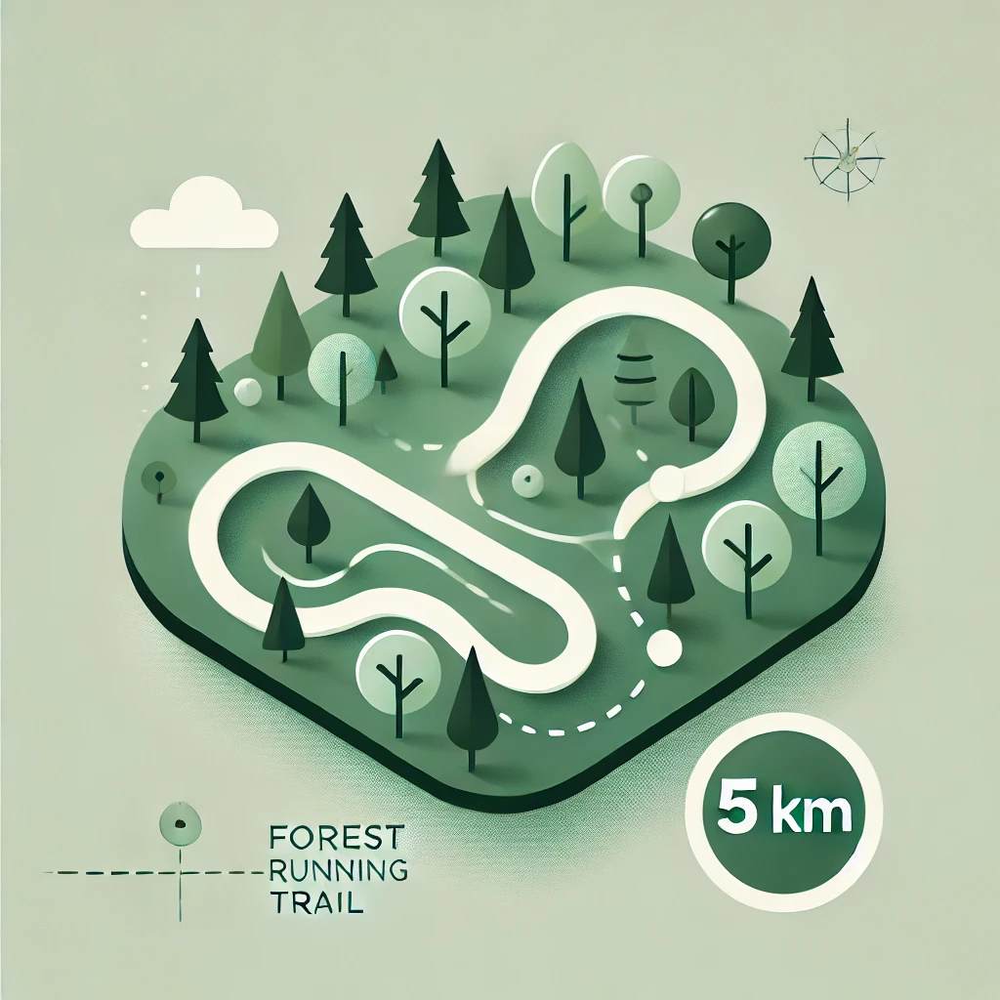

Lesní okruh

Délka: 5 km
Obtížnost: Lehká
Trasa vede krásným lesem s rovinatým terénem. Ideální pro relaxační běh nebo pro začátečníky.
Tip: V létě zde najdete stín, který oceníte při běhu v horkých dnech.